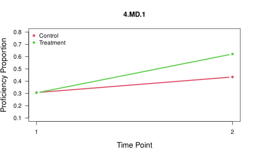
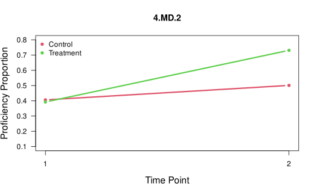
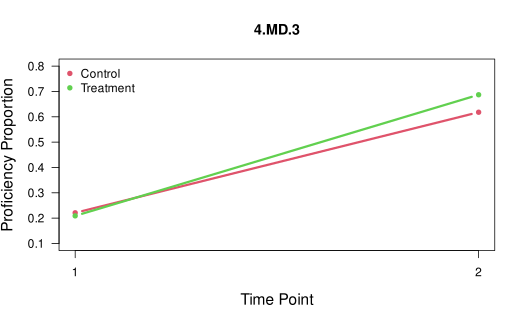
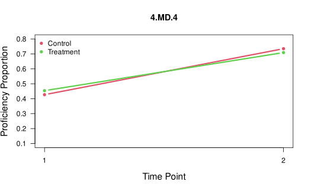
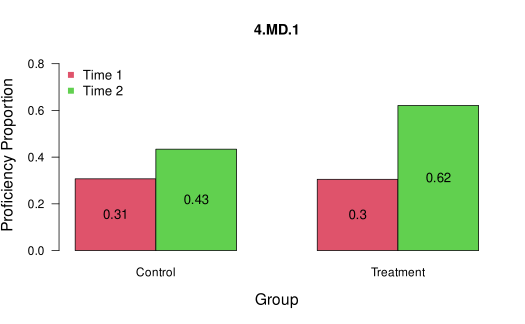
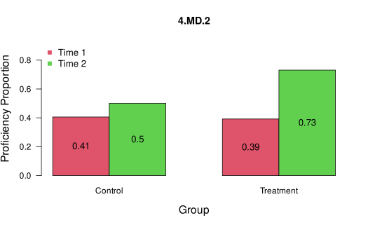
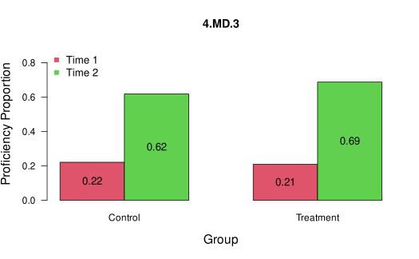
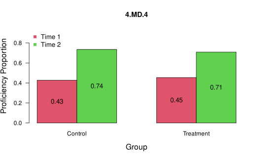

Introduction to the TDCM Package
Matthew J. Madison
Michael E. Cotterell
January 2024
Source:vignettes/TDCM.Rmd
TDCM.RmdOverview of the TDCM Package
The TDCM R package implements estimation of longitudinal DCMs using the transition diagnostic classification model (TDCM) framework described in Madison & Bradshaw (2018). The TDCM is a longitudinal extension of the log-linear cognitive diagnosis model (LCDM) developed by Henson, Templin & Willse (2009). As the LCDM is a general DCM, many other DCMs can be embedded within TDCM. The TDCM package includes functions to estimate the single- and multigroup TDCM, summarize results of interest including item parameter estimates, growth proportions, transition probabilities, transition reliability, attribute correlations, model fit, and growth plots. The TDCM package is an extension the CDM package (Robitzsch et al., 2022), and therefore inherits much of the CDM package’s functionality.
This vignette provides an overview of the package’s core functionality by walking through two examples. The code below can be copied into the R console and run. For more detailed video demonstrations of the package and its functionality, visit here.
Core Functionalities
- To estimate the single- and multigroup TDCM, use the tdcm() and mg.tdcm() functions, respectively.
- To extract item, person, and structural parameters from TDCM estimates, use the tdcm.summary() and mg.tdcm.summary() functions for single- and multigroup analyses, respectively. These summary functions produce a list of results including item parameter estimates, growth proportions, transition probability matrices, transition reliability, attribute correlations, and model fit.
- To compare models and assess relative it, use the tdcm.compare() function.
- To plot the results of a TDCM analysis, use the tdcm.plot() function
- To score responses using fixed item parameters from a previously calibrated model, use the tdcm.score() function
Extended Functionalities
- Different DCMs (e.g., DINA, ACDM) can be implemented within the tdcm() function using the dcmrule argument.
- Multiple Q-matrices for each time point are permitted in the tdcm() function with the number.q argument.
- Anchor (common) items between time points can be specified with the anchor argument.
- For more than two time points, transitions can be defined differently (e.g., first-to-last, first-to-each, successive) with the transition.option argument.
- Responses can be scored using fixed item parameters from a previously calibrated model using the tdcm.score() function.
Example #1: Single Group TDCM
Suppose we have a sample of 1000 fourth grade students. They were assessed before and after a unit covering four measurement and data (MD) standards (attributes; 4.MD.1 - 4.MD.4). The students took the same 20-item assessment five weeks apart. The goal is to examine how the students transition to proficiency of the assessed attributes.
Step 1: Load the package and Dataset #1 included in the package:
#load the TDCM library
library(TDCM)
#read data and Q-matrix
dat1 <- data.tdcm01$data
qmat1 <- data.tdcm01$qmatrix
head(dat1)## t1tem1 t1tem2 t1tem3 t1tem4 t1tem5 t1tem6 t1tem7 t1tem8 t1tem9 t1tem10
## 1 0 0 1 0 0 0 1 0 0 1
## 2 0 1 1 0 1 0 0 0 0 1
## 3 0 0 0 1 1 1 0 1 0 1
## 4 1 0 0 0 0 0 0 0 0 0
## 5 1 0 0 0 0 0 0 0 0 0
## 6 0 0 0 0 0 0 1 0 1 0
## t1tem11 t1tem12 t1tem13 t1tem14 t1tem15 t1tem16 t1tem17 t1tem18 t1tem19
## 1 0 0 0 1 0 1 0 1 0
## 2 1 1 1 1 1 1 0 1 0
## 3 1 0 0 1 0 0 1 1 0
## 4 0 0 0 0 0 0 0 0 0
## 5 0 1 0 1 0 1 0 1 0
## 6 1 0 0 0 0 0 0 0 0
## t1tem20 t2item1 t2item2 t2item3 t2item4 t2item5 t2item6 t2item7 t2item8
## 1 1 0 1 1 1 1 0 0 0
## 2 0 0 0 0 0 0 0 0 0
## 3 1 0 0 1 0 1 0 1 1
## 4 0 0 0 0 0 0 1 0 1
## 5 0 0 1 0 0 1 1 1 1
## 6 1 0 0 0 0 0 0 0 0
## t2item9 t2item10 t2item11 t2item12 t2item13 t2item14 t2item15 t2item16
## 1 0 0 0 1 0 1 1 0
## 2 0 1 0 0 0 1 0 1
## 3 1 1 1 1 1 0 1 0
## 4 1 0 1 1 1 1 1 1
## 5 1 1 1 0 1 1 0 1
## 6 1 0 1 1 1 1 1 1
## t2item17 t2item18 t2item19 t2item20
## 1 1 0 1 0
## 2 1 0 1 0
## 3 0 0 0 0
## 4 1 1 1 1
## 5 1 1 0 1
## 6 1 1 0 0Step 2: To estimate the TDCM, let’s make some decisions. The Q-matrix has some complex items measuring two attributes, so we initially estimate the full LCDM with two-way interactions (default). Since the students took the same assessment, we can assume measurement invariance and will test the assumption later.
#calibrate TDCM with measurement invariance assumed, full LCDM
m1 <- tdcm(data = dat1, qmatrix = qmat1, time.points = 2, invariance = TRUE, dcmrule = "GDINA")Step 3: To summarize results, use the tdcm.summary() function. After running the summary function, we can examine item parameters, growth in attribute proficiency, transition probability matrices, individual transitions, and transitional reliability estimates.
To demonstrate interpretation, let’s discuss some of the results. Item 1 measuring 4.MD.1 has an intercept estimate of -1.923 and a main effect estimate of 2.616. With respect to growth, we see that students exhibited about the same amount of growth for 4.MD.1 - 4.MD.3 (about 17% growth in proficiency), but showed larger gains for 4.MD.4 (about 44%). Examining the 4.MD.1 transition probability matrix, we see that of the students who started in non-proficiency, 32% of them transitioned into proficiency. Examining the individual transition posterior probabilities, we see that Examinee #1 has a mostly likely transition of 0 → 1 (.985 probability). Finally, transition reliability appears adequate, with average maximum transition posteriors ranging from .88 to .92 for the four attributes.
#summarize results
results1 <- tdcm.summary(m1, time.points = 2, attribute.names = c("4.MD.1", "4.MD.2", "4.MD.3", "4.MD.4"))
results1$item.parameters## λ0 λ1,1 λ1,2 λ1,3 λ1,4 λ2,12 λ2,13 λ2,14 λ2,23 λ2,24
## Item 1 -1.923 2.616 -- -- -- -- -- -- -- --
## Item 2 -2.071 2.506 -- -- -- -- -- -- -- --
## Item 3 -1.936 2.506 -- -- -- -- -- -- -- --
## Item 4 -1.891 1.051 1.471 -- -- 1.115 -- -- -- --
## Item 5 -2.157 1.705 -- 1.732 -- -- 0.835 -- -- --
## Item 6 -1.841 -- 2.175 -- -- -- -- -- -- --
## Item 7 -1.841 -- 2.272 -- -- -- -- -- -- --
## Item 8 -1.965 -- 2.475 -- -- -- -- -- -- --
## Item 9 -2.029 -- 1.242 1.531 -- -- -- -- 1.628 --
## Item 10 -2.004 -- 1.921 -- 1.239 -- -- -- -- 0.999
## Item 11 -1.851 -- -- 2.349 -- -- -- -- -- --
## Item 12 -2.045 -- -- 2.566 -- -- -- -- -- --
## Item 13 -2.083 -- -- 2.576 -- -- -- -- -- --
## Item 14 -2.125 -- -- 1.739 2.104 -- -- -- -- --
## Item 15 -1.805 0.777 -- 1.31 -- -- 1.896 -- -- --
## Item 16 -2.156 -- -- -- 2.736 -- -- -- -- --
## Item 17 -2.089 -- -- -- 2.679 -- -- -- -- --
## Item 18 -2.087 -- -- -- 2.476 -- -- -- -- --
## Item 19 -2.11 2.219 -- -- 1.46 -- -- 0.558 -- --
## Item 20 -2.047 -- 2.408 -- 1.49 -- -- -- -- 0.154
## λ2,34
## Item 1 --
## Item 2 --
## Item 3 --
## Item 4 --
## Item 5 --
## Item 6 --
## Item 7 --
## Item 8 --
## Item 9 --
## Item 10 --
## Item 11 --
## Item 12 --
## Item 13 --
## Item 14 0.493
## Item 15 --
## Item 16 --
## Item 17 --
## Item 18 --
## Item 19 --
## Item 20 --
results1$growth## T1[1] T2[1]
## 4.MD.1 0.201 0.372
## 4.MD.2 0.327 0.492
## 4.MD.3 0.397 0.573
## 4.MD.4 0.252 0.696
results1$transition.probabilities## , , 4.MD.1: Time 1 to Time 2
##
## T2 [0] T2 [1]
## T1 [0] 0.678 0.322
## T1 [1] 0.432 0.568
##
## , , 4.MD.2: Time 1 to Time 2
##
## T2 [0] T2 [1]
## T1 [0] 0.578 0.422
## T1 [1] 0.363 0.637
##
## , , 4.MD.3: Time 1 to Time 2
##
## T2 [0] T2 [1]
## T1 [0] 0.55 0.45
## T1 [1] 0.24 0.76
##
## , , 4.MD.4: Time 1 to Time 2
##
## T2 [0] T2 [1]
## T1 [0] 0.365 0.635
## T1 [1] 0.123 0.877
head(results1$transition.posteriors)## , , 4.MD.1: T1 to T2
##
## 00 01 10 11
## 1 0.004 0.985 0.000 0.011
## 2 0.229 0.005 0.748 0.018
## 3 0.854 0.123 0.020 0.003
## 4 0.960 0.032 0.007 0.000
## 5 0.969 0.025 0.006 0.000
## 6 0.996 0.003 0.000 0.000
##
## , , 4.MD.2: T1 to T2
##
## 00 01 10 11
## 1 0.310 0.003 0.682 0.005
## 2 0.966 0.022 0.011 0.000
## 3 0.001 0.020 0.042 0.937
## 4 0.082 0.916 0.000 0.002
## 5 0.000 0.999 0.000 0.001
## 6 0.397 0.003 0.596 0.004
##
## , , 4.MD.3: T1 to T2
##
## 00 01 10 11
## 1 0.033 0.930 0.001 0.036
## 2 0.000 0.000 0.955 0.045
## 3 0.000 0.506 0.000 0.494
## 4 0.000 0.993 0.000 0.006
## 5 0.001 0.607 0.001 0.391
## 6 0.001 0.626 0.000 0.373
##
## , , 4.MD.4: T1 to T2
##
## 00 01 10 11
## 1 0.002 0.043 0.043 0.912
## 2 0.000 0.191 0.002 0.806
## 3 0.013 0.001 0.925 0.061
## 4 0.000 0.998 0.000 0.002
## 5 0.000 0.257 0.000 0.743
## 6 0.004 0.995 0.000 0.002
results1$reliability## pt bis info gain polychor ave max tr P(t>.6) P(t>.7) P(t>.8)
## 4.MD.1 0.788 0.511 0.925 0.922 0.964 0.929 0.856
## 4.MD.2 0.769 0.546 0.905 0.896 0.923 0.868 0.821
## 4.MD.3 0.728 0.527 0.905 0.878 0.918 0.856 0.750
## 4.MD.4 0.715 0.485 0.891 0.899 0.936 0.883 0.801
## P(t>.9) wt pt bis wt info gain
## 4.MD.1 0.747 0.822 0.591
## 4.MD.2 0.694 0.792 0.581
## 4.MD.3 0.625 0.757 0.568
## 4.MD.4 0.709 0.772 0.585Step 4: To assess measurement invariance, let’s estimate a model without invariance assumed, then compare to our first model. Here we see that AIC, BIC, and the likelihood ratio test prefer the model with invariance assumed. Therefore, item parameter invariance is a reasonable assumption and we can interpret results.
#run TDCM with measurement invariance not assumed
m2 <- tdcm(data = dat1, qmatrix = qmat1, time.points = 2, invariance = FALSE, dcmrule = "GDINA")
#compare Model 1 (longitudinal invariance assumed) to Model 2 (invariance not assumed)
tdcm.compare(m1, m2)## Model loglike Deviance Npars AIC BIC Chisq df p
## 1 m1 -21429.51 42859.02 93 43045.02 43501.44 58.14 56 0.3965
## 2 m2 -21400.44 42800.88 149 43098.88 43830.14 NA NA NAStep 5: To estimate other DCMs, change the dcmrule argument. To specify one DCM across all items, include one specification. To specify a different DCM on each item, use a vector with length equal to the number of items. Here, we specify a DINA measurement model and a main effects model (ACDM). Here, we see that the full LCDM fits better than the DINA model and the main effects model.
#calibrate TDCM with measurement invariance assumed, DINA measurement model
m3 <- tdcm(data = dat1, qmatrix = qmat1, time.points = 2, invariance = TRUE, dcmrule = "DINA")
#calibrate TDCM with measurement invariance assumed, ACDM measurement model
m4 <- tdcm(data = dat1, qmatrix = qmat1, time.points = 2, invariance = TRUE, dcmrule = "ACDM")
#compare Model 1 (full LCDM) to Model 3 (DINA)
tdcm.compare(m1, m3)## Model loglike Deviance Npars AIC BIC Chisq df p
## 1 m1 -21429.51 42859.02 93 43045.02 43501.44 500.48 16 0
## 2 m3 -21679.75 43359.49 77 43513.49 43891.39 NA NA NA
#compare Model 1 (full LCDM) to Model 4 (ACDM)
tdcm.compare(m1, m4)## Model loglike Deviance Npars AIC BIC Chisq df p
## 1 m1 -21429.51 42859.02 93 43045.02 43501.44 53.72 8 0
## 2 m4 -21456.37 42912.74 85 43082.74 43499.9 NA NA NAStep 6: To assess absolute fit, extract model fit statistics from the results summary.
results1$model.fit$Global.Fit.Stats## est
## MADcor 0.02221611
## SRMSR 0.02793421
## 100*MADRESIDCOV 0.48573824
## MADQ3 0.03307904
## MADaQ3 0.03196812
results1$model.fit$Global.Fit.Tests## type value p
## 1 max(X2) 9.45244172 1.0000000
## 2 abs(fcor) 0.09801383 0.7680444
results1$model.fit$Global.Fit.Stats2## maxX2 p_maxX2 MADcor SRMSR 100*MADRESIDCOV MADQ3
## 1 9.452442 1 0.02221611 0.02793421 0.4857382 0.03307904
## MADaQ3
## 1 0.03196812
results1$model.fit$Item.RMSEA## Item 1 Item 2 Item 3 Item 4 Item 5 Item 6 Item 7
## 0.1072683 0.1273641 0.1082175 0.1191112 0.1255691 0.1401920 0.1357562
## Item 8 Item 9 Item 10 Item 11 Item 12 Item 13 Item 14
## 0.1130181 0.1208428 0.1135816 0.1318266 0.1110083 0.1104637 0.1190979
## Item 15 Item 16 Item 17 Item 18 Item 19 Item 20 Item 21
## 0.1274363 0.1244858 0.1133979 0.1235323 0.1142053 0.1400732 0.1122910
## Item 22 Item 23 Item 24 Item 25 Item 26 Item 27 Item 28
## 0.1072758 0.1246946 0.1223008 0.1262111 0.1286012 0.1267738 0.1105200
## Item 29 Item 30 Item 31 Item 32 Item 33 Item 34 Item 35
## 0.1164483 0.1158832 0.1303099 0.1289143 0.1225251 0.1096947 0.1357179
## Item 36 Item 37 Item 38 Item 39 Item 40
## 0.1320643 0.1304714 0.1168578 0.1116256 0.1156059
results1$model.fit$Mean.Item.RMSEA## [1] 0.1212809Step 7: For a visual presentation of results, run the tdcm.plot() function:
Example #2: Multigroup TDCM Example
Suppose now that we have a sample of 1700 fourth grade students. But in this example, researchers wanted to evaluate the effects of an instructional intervention. So they randomly assigned students to either the control group (Group 1, N1 = 800) or the treatment group (Group 2, N2 = 900). The goal was to see if the innovative instructional method resulted in more students transitioning into proficiency.
Similar to Example #1, students were assessed before and after a unit covering four measurement and data (MD) standards (attributes; 4.MD.1 - 4.MD.4). The students took the same 20-item assessment five weeks apart.
Step 1: Load the package and Dataset #4 included in the package:
#load the TDCM library
library(TDCM)
#read data, Q-matrix, and group labels
dat4 <- data.tdcm04$data
qmat4 <- data.tdcm04$qmatrix
groups <- data.tdcm04$groups
head(dat4)## t1item1 t1item2 t1item3 t1item4 t1item5 t1item6 t1item7 t1item8 t1item9
## 1 0 0 0 0 0 0 0 0 0
## 2 0 0 0 0 0 0 0 0 0
## 3 0 1 0 0 0 0 0 1 0
## 4 0 0 0 1 0 0 0 0 0
## 5 1 0 0 1 1 0 1 1 1
## 6 1 1 1 0 1 0 1 1 0
## t1item10 t1item11 t1item12 t1item13 t1item14 t1item15 t1item16 t1item17
## 1 0 0 0 0 0 0 0 0
## 2 1 0 0 0 0 0 0 0
## 3 0 0 0 1 0 0 0 0
## 4 0 1 0 0 0 0 1 1
## 5 0 0 0 0 0 0 0 0
## 6 1 0 1 1 1 1 1 0
## t1item18 t1item19 t1item20 t2item1 t2item2 t2item3 t2item4 t2item5
## 1 0 0 0 0 0 1 1 0
## 2 0 0 0 0 1 1 0 0
## 3 0 0 0 0 0 1 0 0
## 4 0 0 0 0 1 1 1 1
## 5 1 0 0 0 0 1 1 0
## 6 1 1 1 0 0 0 0 0
## t2item6 t2item7 t2item8 t2item9 t2item10 t2item11 t2item12 t2item13
## 1 0 0 0 0 0 1 1 0
## 2 1 0 0 0 0 0 0 0
## 3 0 0 0 0 0 1 1 1
## 4 0 1 1 0 1 0 1 0
## 5 0 1 0 0 1 0 0 0
## 6 1 1 1 1 1 1 0 1
## t2item14 t2item15 t2item16 t2item17 t2item18 t2item19 t2item20
## 1 1 1 0 1 1 0 0
## 2 0 0 0 0 0 0 0
## 3 0 0 0 0 0 0 0
## 4 1 1 0 1 1 1 1
## 5 1 0 1 1 1 0 1
## 6 1 0 0 0 0 0 1Step 2: To estimate the multigroup TDCM, we will use the mg.tdcm() function. For this initial model, we will assume item invariance and group invariance. In the next step, we will test these assumptions.
#calibrate mgTDCM with item and group invariance assumed, full LCDM
mg1 <- mg.tdcm(data = dat4, qmatrix = qmat4, time.points = 2, dcmrule = "GDINA", groups = groups, group.invariance = TRUE, item.invariance = TRUE)## [1] Preparing data...
## [1] Estimating mgTDCM...
## [1] Note: Depending on model specifications, estimation for the multigroup TDCM can take a few minutes.
## [1] Estimating mgTDCM, progress = 34%...
## [1] Routine finished. Use the mg.tdcm.summary function to display results.Step 3: To assess measurement invariance, let’s estimate three additional models: - A model assuming item invariance (TRUE) and not assuming group invariance (FALSE) - A model not assuming item invariance (FALSE) and assuming group invariance (TRUE) - A model not assuming either; item invariance (FALSE) and group invariance (FALSE)
All model comparisons prefer the model with group and time invariance. Therefore, we can proceed in interpreting Model 1.
#calibrate mgTDCM with item invariance assumed, full LCDM
mg2 <- mg.tdcm(data = dat4, qmatrix = qmat4, time.points = 2, dcmrule = "GDINA", groups = groups, group.invariance = FALSE, item.invariance = TRUE)## [1] Preparing data...
## [1] Estimating mgTDCM...
## [1] Note: Depending on model specifications, estimation for the multigroup TDCM can take a few minutes.
## [1] Estimating mgTDCM, progress = 40%...
## [1] Routine finished. Use the mg.tdcm.summary function to display results.
#calibrate mgTDCM with group invariance assumed, full LCDM
mg3 <- mg.tdcm(data = dat4, qmatrix = qmat4, time.points = 2, dcmrule = "GDINA", groups = groups, group.invariance = TRUE, item.invariance = FALSE)## [1] Preparing data...
## [1] Estimating mgTDCM...
## [1] Note: Depending on model specifications, estimation for the multigroup TDCM can take a few minutes.
## [1] Estimating mgTDCM, progress = 49%...
## [1] Routine finished. Use the mg.tdcm.summary function to display results.
#calibrate mgTDCM with no invariance assumed, full LCDM
mg4 <- mg.tdcm(data = dat4, qmatrix = qmat4, time.points = 2, dcmrule = "GDINA", groups = groups, group.invariance = FALSE, item.invariance = FALSE)## [1] Preparing data...
## [1] Estimating mgTDCM...
## [1] Note: Depending on model specifications, estimation for the multigroup TDCM can take a few minutes.
## [1] Estimating mgTDCM, progress = 32%...
## [1] Routine finished. Use the mg.tdcm.summary function to display results.
#compare Model 1 (group/item invariance) to Model 2 (no group invariance)
tdcm.compare(mg1, mg2)## Model loglike Deviance Npars AIC BIC Chisq df p
## 1 mg1 -37371.96 74743.92 130 75003.92 75710.91 27.92 56 0.9994
## 2 mg2 -37358 74716 186 75088 76099.54 NA NA NA
#compare Model 1 (group/item invariance) to Model 3 (no item invariance)
tdcm.compare(mg1, mg3)## Model loglike Deviance Npars AIC BIC Chisq df p
## 1 mg1 -37371.96 74743.92 130 75003.92 75710.91 63.22 56 0.2366
## 2 mg3 -37340.35 74680.7 186 75052.7 76064.24 NA NA NA
#compare Model 1 (group/item invariance) to Model 4 (no invariance)
tdcm.compare(m1, m4)## Model loglike Deviance Npars AIC BIC Chisq df p
## 1 m1 -21429.51 42859.02 93 43045.02 43501.44 53.72 8 0
## 2 m4 -21456.37 42912.74 85 43082.74 43499.9 NA NA NAStep 4: To summarize results, use the mg.tdcm.summary() function. After running the summary function, we can examine item parameters, growth in attribute proficiency by group, transition probability matrices by group, individual transitions, and transitional reliability estimates.
To demonstrate interpretation, let’s discuss some of the results. Item 1 measuring 4.MD.1 has an intercept estimate of -1.87 and a main effect estimate of 2.375. With respect to growth, first we see that the randomization appeared to work, as both groups had similar proficiency proportions at the first assessment. Then we see that for all but the 4.MD.4 attribute, the treatment group showed increased growth in attribute proficiency.
#summarize results
resultsmg1 <- mg.tdcm.summary(mg1, time.points = 2, attribute.names = c("4.MD.1", "4.MD.2", "4.MD.3", "4.MD.4"), group.names = c("Control", "Treatment"))## [1] Summarizing results...
## [1] Summarizing results, progress = 40%...
## [1] Routine finished. Check results.
resultsmg1$item.parameters## λ0 λ1,1 λ1,2 λ1,3 λ1,4 λ2,12 λ2,13 λ2,14 λ2,23 λ2,24
## Item 1 -1.87 2.375 -- -- -- -- -- -- -- --
## Item 2 -2.039 2.553 -- -- -- -- -- -- -- --
## Item 3 -2.153 2.6 -- -- -- -- -- -- -- --
## Item 4 -2.103 1.722 1.528 -- -- 0.822 -- -- -- --
## Item 5 -2.1 1.519 -- 1.428 -- -- 1.241 -- -- --
## Item 6 -1.943 -- 2.456 -- -- -- -- -- -- --
## Item 7 -1.904 -- 2.463 -- -- -- -- -- -- --
## Item 8 -2 -- 2.434 -- -- -- -- -- -- --
## Item 9 -2.084 -- 1.744 1.764 -- -- -- -- 0.624 --
## Item 10 -2.088 -- 1.406 -- 1.636 -- -- -- -- 0.922
## Item 11 -1.958 -- -- 2.474 -- -- -- -- -- --
## Item 12 -2.151 -- -- 2.642 -- -- -- -- -- --
## Item 13 -1.877 -- -- 2.367 -- -- -- -- -- --
## Item 14 -1.911 -- -- 1.297 1.198 -- -- -- -- --
## Item 15 -2.156 1.788 -- 1.772 -- -- 0.617 -- -- --
## Item 16 -2.129 -- -- -- 2.584 -- -- -- -- --
## Item 17 -2.367 -- -- -- 3.004 -- -- -- -- --
## Item 18 -2.016 -- -- -- 2.429 -- -- -- -- --
## Item 19 -2.03 1.561 -- -- 1.395 -- -- 0.839 -- --
## Item 20 -2.197 -- 1.614 -- 1.744 -- -- -- -- 0.803
## λ2,34
## Item 1 --
## Item 2 --
## Item 3 --
## Item 4 --
## Item 5 --
## Item 6 --
## Item 7 --
## Item 8 --
## Item 9 --
## Item 10 --
## Item 11 --
## Item 12 --
## Item 13 --
## Item 14 1.214
## Item 15 --
## Item 16 --
## Item 17 --
## Item 18 --
## Item 19 --
## Item 20 --
resultsmg1$growth## , , Control
##
## T1[1] T2[1]
## 4.MD.1 0.307 0.434
## 4.MD.2 0.406 0.501
## 4.MD.3 0.221 0.618
## 4.MD.4 0.427 0.735
##
## , , Treatment
##
## T1[1] T2[1]
## 4.MD.1 0.305 0.621
## 4.MD.2 0.392 0.731
## 4.MD.3 0.209 0.687
## 4.MD.4 0.454 0.709
resultsmg1$transition.probabilities## , , 4.MD.1: Time 1 to Time 2, Control
##
## T2 [0] T2 [1]
## T1 [0] 0.633 0.367
## T1 [1] 0.416 0.584
##
## , , 4.MD.2: Time 1 to Time 2, Control
##
## T2 [0] T2 [1]
## T1 [0] 0.571 0.429
## T1 [1] 0.395 0.605
##
## , , 4.MD.3: Time 1 to Time 2, Control
##
## T2 [0] T2 [1]
## T1 [0] 0.432 0.568
## T1 [1] 0.203 0.797
##
## , , 4.MD.4: Time 1 to Time 2, Control
##
## T2 [0] T2 [1]
## T1 [0] 0.333 0.667
## T1 [1] 0.173 0.827
##
## , , 4.MD.1: Time 1 to Time 2, Treatment
##
## T2 [0] T2 [1]
## T1 [0] 0.437 0.563
## T1 [1] 0.250 0.750
##
## , , 4.MD.2: Time 1 to Time 2, Treatment
##
## T2 [0] T2 [1]
## T1 [0] 0.369 0.631
## T1 [1] 0.115 0.885
##
## , , 4.MD.3: Time 1 to Time 2, Treatment
##
## T2 [0] T2 [1]
## T1 [0] 0.370 0.630
## T1 [1] 0.097 0.903
##
## , , 4.MD.4: Time 1 to Time 2, Treatment
##
## T2 [0] T2 [1]
## T1 [0] 0.352 0.648
## T1 [1] 0.219 0.781
head(resultsmg1$transition.posteriors)## , , 4.MD.1: T1 to T2
##
## 00 01 10 11
## 1 0.654 0.344 0.001 0.001
## 2 0.962 0.037 0.001 0.000
## 3 0.973 0.012 0.015 0.000
## 4 0.000 0.987 0.000 0.013
## 5 0.433 0.109 0.369 0.089
## 6 0.001 0.000 0.998 0.001
##
## , , 4.MD.2: T1 to T2
##
## 00 01 10 11
## 1 0.988 0.009 0.003 0.000
## 2 0.970 0.014 0.016 0.000
## 3 0.976 0.003 0.021 0.000
## 4 0.004 0.984 0.000 0.012
## 5 0.009 0.027 0.186 0.778
## 6 0.000 0.026 0.000 0.974
##
## , , 4.MD.3: T1 to T2
##
## 00 01 10 11
## 1 0.035 0.964 0.000 0.000
## 2 0.997 0.003 0.000 0.000
## 3 0.182 0.818 0.000 0.001
## 4 0.034 0.962 0.000 0.004
## 5 0.928 0.040 0.031 0.001
## 6 0.000 0.011 0.009 0.980
##
## , , 4.MD.4: T1 to T2
##
## 00 01 10 11
## 1 0.082 0.914 0.001 0.003
## 2 0.974 0.009 0.017 0.000
## 3 0.990 0.005 0.006 0.000
## 4 0.000 0.330 0.000 0.669
## 5 0.000 0.994 0.000 0.006
## 6 0.000 0.000 0.120 0.879
resultsmg1$reliability## pt bis info gain polychor ave max tr P(t>.6) P(t>.7) P(t>.8)
## 4.MD.1 0.777 0.541 0.897 0.894 0.914 0.877 0.825
## 4.MD.2 0.757 0.527 0.885 0.877 0.905 0.847 0.768
## 4.MD.3 0.765 0.498 0.911 0.914 0.952 0.903 0.842
## 4.MD.4 0.769 0.516 0.882 0.887 0.931 0.858 0.771
## P(t>.9) wt pt bis wt info gain
## 4.MD.1 0.677 0.806 0.562
## 4.MD.2 0.625 0.766 0.545
## 4.MD.3 0.746 0.826 0.584
## 4.MD.4 0.658 0.775 0.556Step 5: For a visual presentation of results, run the tdcm.plot() function:
#plot results (check plot viewer for line plots and bar charts)
tdcm.plot(resultsmg1, attribute.names = c("4.MD.1", "4.MD.2", "4.MD.3", "4.MD.4"),
group.names = c("Control", "Treatment"))
## [1] **Check plots window for line and bar plots for growth proportions.